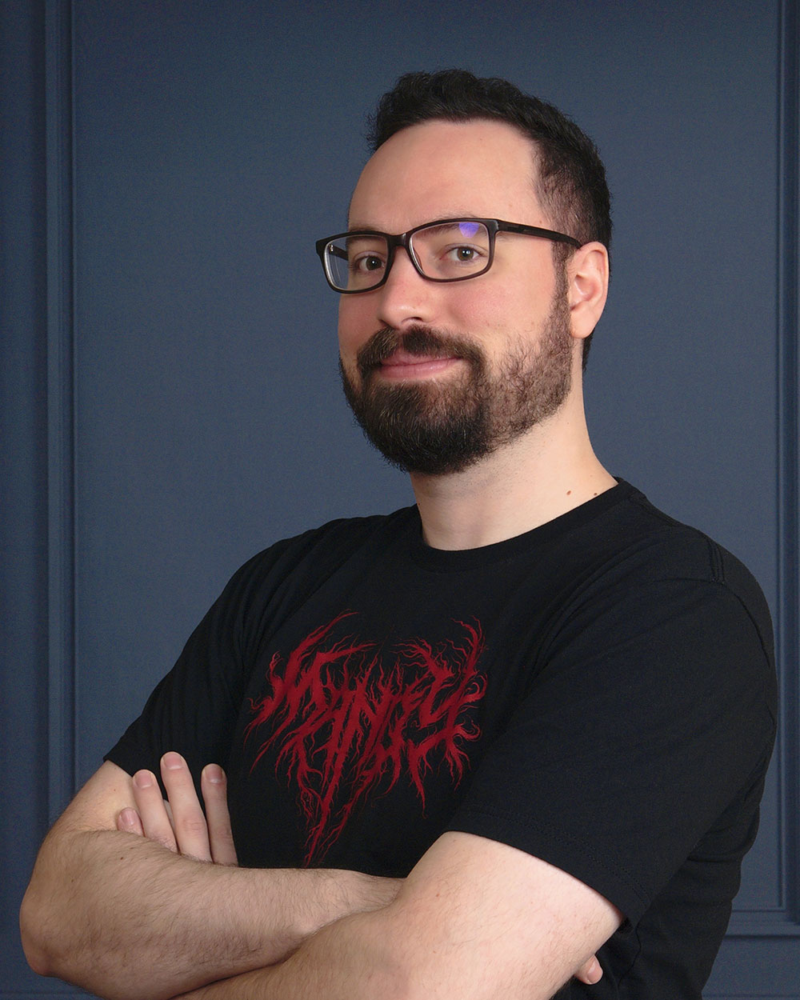

Steve Gabry , znany online jako Portable Moose , jest artystą, gitarzystą i niezależnym twórcą gier z Pittsburgha. Jest twórcą gry Sally Face i ponosi wyłączną odpowiedzialność za każdy aspekt jej rozwoju. Steve już w liceum zaczal marzyc o chłopcu z proteza twarzy. Marzyl by pewnego dnia stworzyć na ten temat gre. Na szczęście nie porzucil tego marzenia i stworzyl jedna z najlepszy gier horrorowych tych czasów.